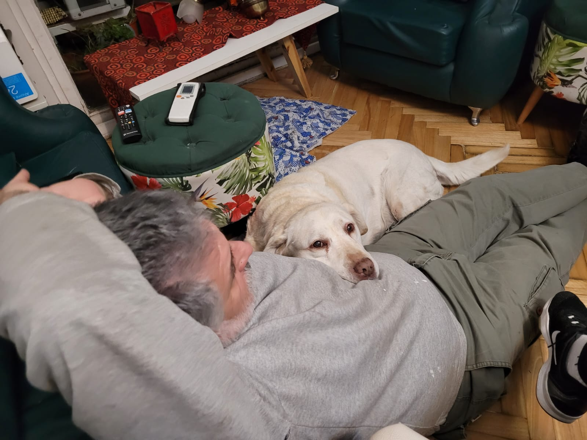
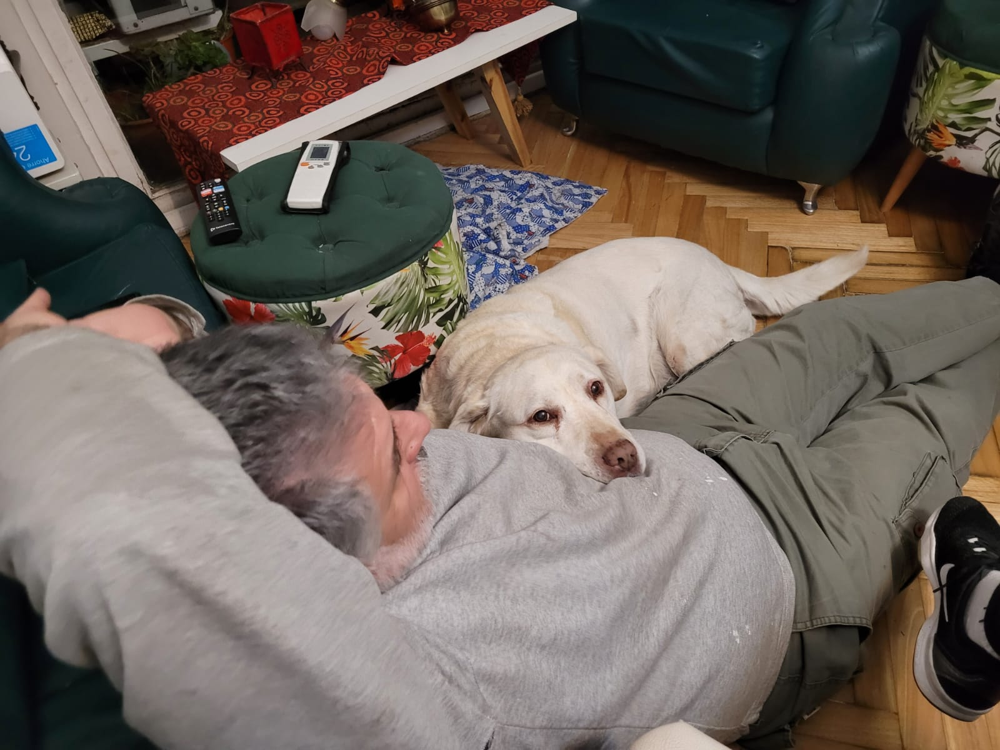

Sobre mi
Cuando era chiquita, como todo cachorro, solía dormir mucho y a veces en posiciones muy graciosas...
Aunque ahora que crecí sigo durmiendo mucho. A veces con Kiara, mi hermana, o con Guillermo, mi dueño.
 

¡Mirá todo lo que crecí!